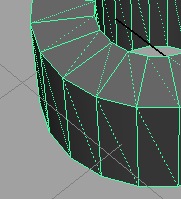

建模工具包菜单
对象(Object)
显示/隐藏(Show/Hide)
切换选定对象的可见性。
冻结/解冻(Freeze/Unfreeze)
冻结或解冻选定对象。冻结对象时无法选择该选项。
开启/关闭 X 射线(X-Ray On/Off)
为选定对象切换 X 射线模式，使其处于半透明状态。
提示：
X 射线模式在重新拓扑工作流中很有用。在对引用曲面着色时，您可能难以看到使用
“四边形绘制”(Quad Draw)
工具创建的新拓扑。您可以将引用曲面设置为 X 射线，同时将新拓扑保持不透明。请参见
使用“四边形绘制”(Quad Draw)重新拓扑网格
。
显示/隐藏背面(Show/Hide Backfaces)
切换选定对象的背面消隐。打开
“显示/隐藏背面”(Show/Hide Backfaces)
后，Maya 会隐藏法线方向远离摄影机的面。另请参见
背面消隐(Backface Culling)
。
显示/隐藏面三角形(Show/Hide Face Triangles)
切换选定对象上面三角形的可见性。启用后，Maya 会将所有面都显示为三角形。

相关主题
建模工具包
父主题：
建模工具包(Modeling Toolkit)